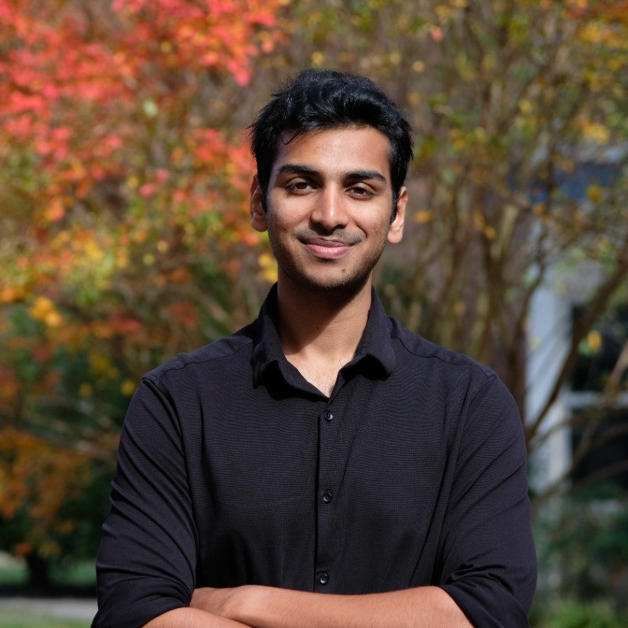

Khuzema Habib
Masters in Robotics Engineering student at University of Maryland, College Park. Dedicated to pushing the boundaries of autonomous systems and robotic manipulation.
Research Interests

Education
Master of Engineering in Robotics
University of Maryland, College Park | 2024 - 2026
Bachelors of Technology in Mechanical Engineering
Manipal Institute of Technology | 2019 - 2023
Work Experience
- Gathered 100+ expert demonstration data via teleoperation of a UR3e robotic arm for imitation learning models.
- Conducted flight trials for Crazyflie drone control systems, developing Contextual NeuroMHE Controllers.
- Developing Autonomous Indoor Navigation and Mobile Manipulation on Turtlebot2 Platform.
- Implementing Real-time CFD Based Estimation for Quadrotor Controller in Turbulent Environments.
- Assisting 35+ students in understanding control system design (PID & LQR).
- Covering real-world applications in robotics for system modeling and optimization.
- Conducted ANSYS simulations to analyze piezo-electric materials for energy harvesting.
- Mathematical Modeling of Flow Environments leveraging CFD with Ansys Fluent.
- Acoustics and Vibration Analysis for Acoustic Black-Hole applications.
- Performed 2D and 3D CFD simulations for a rocket thruster to identify optimal fuel and oxidizer injector configurations.
- Gained hands-on experience with simulation tools to improve injector design for propulsion efficiency.
Projects
Autonomous Mobile Manipulator
Built and developed a fully autonomous robot capable of computer vision-based object localization and servo-controlled manipulation.
- Built and Assembled a Mobile Robot from Scratch with an integrated gripper for mobile manipulation tasks.
- Raspberry Pi 4B platform with a camera and ultrasonic sensor, along with an Arduino nano for IMU data collection.
- Integrated sensor-fused navigation with wheel odometry and IMU data.
- Pick-and-place tasks with subsystems integration.
- Successfully completed the final challenge of the competition, where the robot needed to autonomously find RGB blocks and place them in a target zone.
- Added a custom designed LED ring indicator to the robot for navigation state visualization.
Autonomous Vehicle Behaviour Planning In CARLA
Worked on a behavior planner for autonomous vehicles in CARLA with Behaviour Trees for decision making.
- Behavior Planning: Uses Behavior Trees to decide high-level maneuvers (LANE_KEEP, FOLLOW, LANE_CHANGE, STOP_FOR_LIGHT, RECOVERY).
- Trajectory Planning: Generates candidate trajectories in Frenet coordinates and selects the optimal path based on a weighted cost function.
- Vehicle Control: Implemented PID controller for longitudinal speed and Stanley controller for high-fidelity lateral steering.
- State Machines: Integrated tracking for in-progress lane changes and a robust recovery mode for off-road or stuck scenarios.
Visual Servoing with MPC
Designed MPC visual servoing controller for Turtlebot3 navigation using RealSense and Aruco markers.
- Model Predictive Control: Integrated a visual servo-based MPC framework to steer nonholonomic wheeled robots.
- Polar Kinematics: Transformed robot kinematics into a polar coordinate frame to ensure smoother steering and avoid Cartesian singularities.
- Real-time Optimization: Utilized CVXPY and OSQP Solver to solve Quadratic Programming (QP) optimization problems efficiently.
- Visual Servoing: Used a depth camera for position-based visual servoing and real-time depth feedback.
- Constraint Enforcement: Enforced operational constraints such as actuator saturation and velocity limits directly within the control design (Q and R matrices).
- Gazebo Validation: Validated the framework in simulation, demonstrating superior precision and speed over traditional PD control.
Stanford Doggo Inspired Quadruped
Ongoing
Building an agile and durable quadruped robot inspired by Stanford Doggo to use as a testbed for future projects
- Fabrication (3D Printing and CNC machining) and Assembly
- Wiring and Odrive setup with custom firmware, Teensy 3.5 Microcontroller for control with Xbee for Wireless communication
- Chassis reinforcement with the use of Carbon Fiber Rods over Sheet Metal
- Testing and fine-tuning the build to ensure proper functionality - Need to fix some issues with wea k er PLA components snapping under load when walking
- Future integration with ROS2 for Autonous Navigation and easier integration with other sub s ystems
- Future improvements to mechanical design to add additional degree of freedom to the legs
LQR Controller for Double Inverted Pendulum Cart Problem
Implemented an optimal control strategy for a complex nonlinear system involving a cart and two coupled pendulums.
- Derived the nonlinear equations of motion for a cart with two pendulums using Eul e r-Lagrange equations.
- Linearized the complex nonlinear system about a specific equilibrium point to create a state-space representation.
- Developed an optimal LQR controller by penalizing state error and actuator effort thr o ugh tuned Q and R matrices.
- Certified the closed-loop stability of the system using Lyapunov's indirect method and eigenvalue analysis.
- Designed Luenberger observers for observable output vectors to estimate system states fro m limited measurements.
- Implemented a Linear Quadratic Gaussian (LQG) controller to maintain optimal performance in the presence of process and measurement noise.
A Star Path Planner for Turtlebot3
Developed an A* path planner for a Turtlebot3 robot to navigate through a maze-like environment. Validated on Gazebo Simulation as well as real-world testing.
- Developed a 2D map environment using half-planes and semi-algebraic equations with configurable robot clearances.
- Integrated a trajectory controller using proportional control to translate planned waypoints into linear and angular velocities.
- Validated path execution across multiple simulation platforms, including Gazebo, the Falcon Simulator, and Matplotlib.
- Processed real-time odometry data (/odom) to handle pose estimation and heading angles via quaternion transformation.
- Optimized movement by incorporating differential drive constraints, allowing user-defined RPM inputs for wheel velocities.
Publications
Kasra Torshizi, Chak Lam Shek, , Guangyao Shi, Pratap Tokekar, Troi Williams
Developed a reinforcement learning-based adaptive controller enabling robust quadrotor trajectory tracking across diverse environments with 20.3% trajectory error reduction on Crazyflie Drones
View PaperAnukriti Singh, Kasra Torshizi, , Kelin Yu, Ruohan Gao, Pratap Tokekar
Developed an affordance-guided keypoint selection framework enabling lightweight, real-time robotic manipulation with 82% success on unseen objects
View Paper